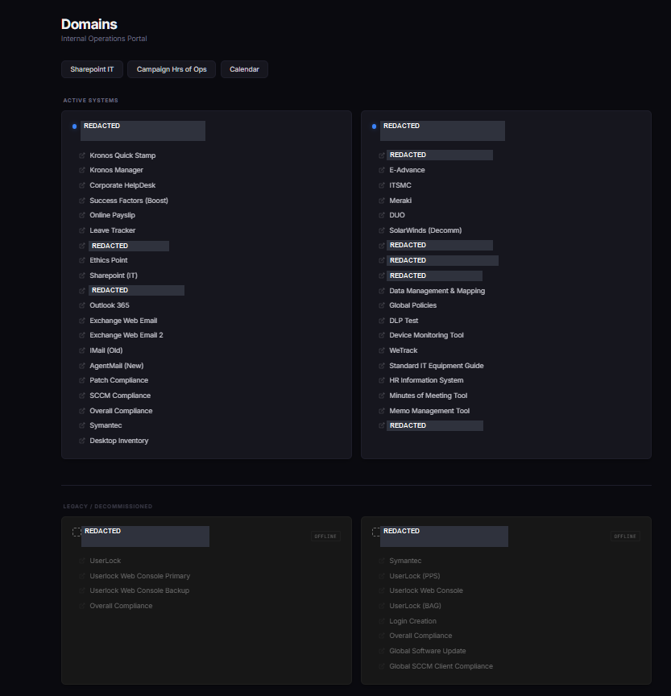

Centralized resources
Presented common IT resource links in one location, reducing the need to search for individual bookmarks.
PROFESSIONAL PROJECT / IT OPERATIONS
An organized internal resource directory designed to make everyday IT tools easier for our team to find and access.
WORKPLACE USE CASE
During my previous IT Systems Specialist role, I replaced an older HTML tools directory on our team's SharePoint with a redesigned version. The goal was to organize the resources we used in everyday IT support into a clearer, more useful interface for the entire team.
Presented common IT resource links in one location, reducing the need to search for individual bookmarks.
Grouped related links into cards, with headings and readable labels for easier navigation.
Separated active resources from legacy or decommissioned resources, using visual status indicators.
Shared the updated directory through the existing internal SharePoint location so colleagues could use the same reference.
APPLICATION SHOWCASE

The screenshot preserves the organizational layout. No live internal URLs are provided.
IMPLEMENTATION
The original directory uses static HTML and CSS, with responsive cards, link lists, quick-access controls and visual status labels. It provides navigation to existing tools rather than implementing the tools themselves.
The original internal HTML file is not published here. The portfolio describes the design and workflow improvement without exposing proprietary content.
PROFESSIONAL SKILLS